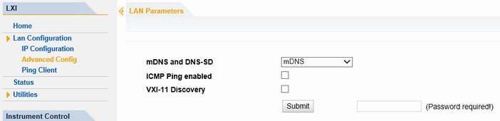

Advanced Config
The "Advanced Config" web page provides LAN settings that are not declared mandatory by the LXI standard.

The following advanced parameters are available:
- "mDNS and DNS-SD": The additional protocols "multicast DNS" and "DNS service discovery" are used for device communication in zero configuration networks, working without DNS and DHCP.
- "ICMP Ping enabled": If you disable this setting, the instrument does not answer ping requests. So it cannot be pinged.
The setting does not affect the LXI ping client. You can ping other hosts from the instrument, even if the setting is disabled. - "VXI-11 Discovery": If you disable this setting, the instrument cannot be detected via the VXI-11 discovery mechanism. The setting does not affect other detection mechanisms. Setting up a VXI-11 connection via the IP address or the host name is possible independent of this setting.